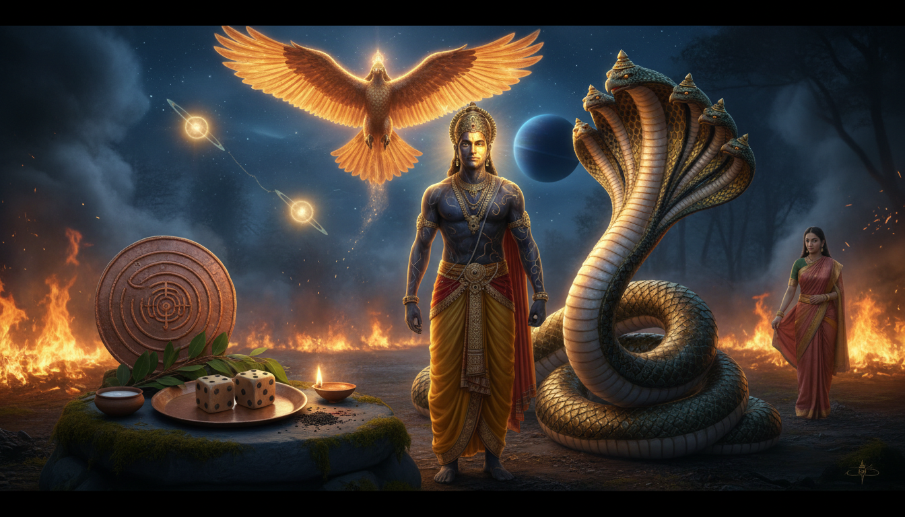

महाभारत के वन पर्व में एक ऐसी कथा मिलती है जो भाग्य, जुए, नशे, धनहानि, सर्पदंश, प्रेम, धैर्य और पुनर्स्थापना के बारे में असाधारण रूप से आधुनिक है। राजा नल निषध देश के राजा थे। वे सुंदर थे, दानी थे, विद्वान थे और अश्वविद्या में प्रवीण थे। विदर्भ की राजकुमारी दमयंती ने स्वयं देवताओं को छोड़कर उन्हें चुना। फिर भी एक दिन वही राजा अपना राज्य, राजमहल, रत्न, हाथी और सम्मान पासों के खेल में हार गए।

यह कथा केवल जुए की चेतावनी नहीं है। यह वैदिक ज्योतिष की उस ऊर्जा का चित्र है जिसे हम राहु-केतु अक्ष या काल सर्प योग की संकुचित ऊर्जा कहते हैं। इसमें जीवन अचानक ऊपर उठता है, अचानक नीचे गिरता है और व्यक्ति एक ही पुराने चक्र में बार-बार उलझता है। लेकिन नल की कथा केवल पतन की गाथा नहीं है। यह उस साधना का मार्गदर्शक भी है जिसने राजा को फिर से अपना राज्य, अपनी पत्नी और अपना आत्मविश्वास दिलाया।
आधुनिक भाषा में नल की कथा एक उपचारात्मक ज्योतिष मैनुअल है। यह राहु के आकर्षण, केतु के विच्छेद, शनि के श्रम, नाग कर्म के संकेत, गरुड रक्षा के बंधन, आयुर्वेदिक शुद्धि और दार्शनिक विवेक को एक ही आख्यान में जोड़ती है। इसे पढ़िए नहीं भय की कथा की तरह, बल्कि एक व्यावहारिक साधना के रूप में जो कर्म के चक्र को जीवन की दिशा दे सकती है।
1. स्वर्णिम भाग्य वाला राजा
निषध के राजा नल धर्मपरायण, तेजस्वी और परुषक्रमी थे। उनके गुणों की चर्चा सुनकर ही दमयंती उनसे प्रेम करने लगी थी। जब स्वयंवर का समय आया, तो देवताओं ने भी दमयंती से विवाह की इच्छा प्रकट की। उन्होंने नल से अपना संदेश ले जाने को कहा। यहाँ नल का धर्म अद्भुत है: उन्होंने अपने प्रतिस्पर्धियों देवताओं का ही संदेश पहुँचाया।
दमयंती ने देवताओं और नल को सामने देखा, फिर भी उसने मर्त्य नल को चुना। उसने दिव्यता पहचानी, लेकिन अपने हृदय के प्रेम के सामने झुकी। देवताओं ने सत्य के कारण उद्वाह स्वीकार किया और वर दिया।
ज्योतिष की भाषा में नल का पूर्व जीवन एक शक्तिशाली सूर्य और शुभ गुरु जैसा प्रतीत होता है: राजसत्ता, धर्म, प्रतिष्ठा, सौंदर्य और समृद्धि। दमयंती स्वस्थ चंद्र का प्रतीक है, जो संकट के बाद भी संबंध को धैर्य से बाँधे रखती है। लेकिन हर शक्तिशाली कुंडली में एक परीक्षा छिपी रहती है। नल की परीक्षा शत्रु के रूप में नहीं आई। वह एक सूक्ष्म शक्ति के रूप में आई, जिसका नाम कलि था।
यहाँ कलि से तात्पर्य आद्या शक्ति महाकाली नहीं है। यह कलियुग का व्यक्त रूप है: व्यग्रता, आसक्ति, विकृत इच्छा और उसका खोना जो पहले से प्राप्त है। यह शक्ति बारह वर्ष तक प्रतीक्षा करती रही, क्योंकि जब तक साधक का नियम दृढ़ है, विकार उसके भीतर प्रवेश नहीं कर पाता।
2. पासे और राहु का आकर्षण
कथा के अनुसार एक दिन नल ने शुद्धि का नियम भूलकर बिना पैर धोए राजसी कार्य में प्रवृत्त हुए। यह अत्यंत छोटी असावधानी थी, लेकिन उसी सूक्ष्म द्वार से कलि ने उनके मन में प्रवेश किया।
इसके बाद उनका वैराग्य बदल गया। भाई पुष्कर ने अक्ष क्रीडा का निमंत्रण दिया। नल जानते थे कि यह ठीक नहीं है। सभी लोगों ने रोका, लेकिन उनका मन रुक नहीं रहा। वे रत्नों से राज्य तक सब कुछ दांव पर लगाते गए और सब हार गए।
राहु का प्रभाव यहीं स्पष्ट रूप से दिखता है:
- आकस्मिक मोह: शेयर, सट्टा, क्रिप्टो, नशा या कोई नया लाभ अचानक सर्वस्व लग जाता है।
- मंदबुद्धि: परिवार और विशेषज्ञ की सलाह सुनाई देती है, पर मन में उतरती नहीं।
- असंगत हानि: पहली गलती छोटी होती है, क्षति असाधारण बड़ी हो जाती है।
- दोहराव: हार के बाद भी मन कहता है, अब एक बार और।
- समय सापेक्षता: राहु दशा, राहु भुक्ति, राहु काल, ग्रहण या नोडल रिटर्न में यह चक्र तीव्र हो जाता है।
राहु बिना शरीर का मुख है। वह भूख देता है, पर संतोष नहीं देता। केतु बिना मुख का शरीर है। वह विच्छेद देता है, पर उसका तर्क नहीं बताता। इन दोनों के बीच फँसे ग्रह किसी भी व्यक्ति के जीवन में नाटकीय उतार-चढ़ाव दे सकते हैं।
पासे यहाँ अक्ष विद्या का प्रतीक भी हैं। नल की त्रासदी यह नहीं कि पासे थे, बल्कि यह है कि वे उन्हें बिना स्वाधीनता के फेंक रहे थे। जब वही विद्या ज्ञान से प्राप्त होती है, तो वह उपाय बन जाती है।
3. दमयंती: संबंध का चंद्र उपचार
राज्य हारने के बाद नल और दमयंती वन में भटकने लगे। दमयंती ने अपमान नहीं किया, न ही उन्हें अकेला छोड़ा। उन्होंने अपने बच्चों की रक्षा के लिए विदर्भ भेजा और स्वयं साथ बनी रही।
एक क्षण में नल ने लोभ या क्रोध से नहीं, बल्कि लज्जा से वह आँगन चीरकर चले गए और सोती हुई दमयंती को वन में छोड़ दिया। उन्होंने सोचा कि वे उसे अपने दुर्भाग्य से मुक्त कर रहे हैं। यह करुणा थी, लेकिन करुणा के साथ आत्मग्लानि भी थी।
शनि के दबाव में जी रहे व्यक्ति इसी स्थिति को समझ सकते हैं। वे चुप हो जाते हैं, अपना घाटा छिपाते हैं और मानते हैं कि सबसे दूर हो जाना ही सबके लिए अच्छा है। लेकिन शनि यह सिखाते हैं कि धर्म स्वयं को मिटाना नहीं है। धर्म लौटकर बोलना, उत्तरदायित्व स्वीकार करना और संबंध को मरम्मत करना है।
दमयंती की साधना व्यावहारिक भक्ति है। वह निष्क्रिय नहीं रही। उसने पिता से संपर्क किया, अपने बच्चों की रक्षा की, पति की खोज जारी रखी और अंत में एक दूसरा स्वयंवर घोषित करके नल को बाहर आने पर विवश किया। राहु से पीड़ित मन के लिए चंद्र उपचार यही है: नींद, भोजन, परिवार, सत्य और धैर्य।
4. कार्कोटक दंश: विष से विष की शांति
नल जलते वन में गए और उन्होंने एक अद्भुत आवाज सुनी। सर्पराज कार्कोटक अग्नि में फँसा था। नल ने उसे बचाया। यह अपेक्षित नहीं था। लेकिन उद्धार के बाद सर्प ने राजा को दंश लिया।
यही कथा का रहस्य है। दंश ने नल के शरीर को नील और विकृत कर दिया, लेकिन उसी विष ने कलि को शरीर में टिकने की अनुमति नहीं दी। कार्कोटक ने उन्हें एक वस्त्र दिया जो उनका असली रूप लौटा सकता था और राजा ऋतुपर्ण के पास बाहुक नाम से सेवा करने को कहा।
नाग उपायों का यही गूढ़ सिद्धांत है:
जो विष घाव देता है, वही गहरे विष को बाहर निकाल सकता है।
कार्कोटक ने नल का कर्म दर्द रहित नहीं किया। उन्होंने दर्द को शिक्षक बनाया। नीला शरीर राजा की आकृति के मोह को तोड़ा। बाहुक नाम ने उन्हें सिखाया कि असली पहचान विदेशी नहीं, प्रतिष्ठा भी नहीं, बल्कि कर्म और विवेक है।
कार्कोटक नाग तत्व का प्रतीक है। यह संकुचित कुंडलिनी ऊर्जा है। यह वह शक्ति है जो असंयमित होने पर विष और संयमित होने पर औषधि बनती है। इसीलिए नाग साधना कभी भयपूर्ण टोटके के रूप में नहीं करनी चाहिए। नाग साधना द्वार, संयम और अनुग्रह से जुड़ी विद्या है।
5. बाहुक: गुप्त सेवा की शक्ति
नल राजा ऋतुपर्ण के पास पहुँचे और बाहुक नाम से रसोइया और सारथी बन गए। उनके हाथ का भोजन दिव्य हो गया। उनकी अश्वविद्या अद्भुत थी। परंतु यह वही नल थे जो राज्य हार चुके थे। अब वे भोजन पका रहे थे, सारथी का कार्य कर रहे थे और अपना दुख प्रकट नहीं कर रहे थे।
यह शनि उपाय का सबसे सुंदर उदाहरण है। शनि महत्व को नहीं काटते, वे अहंकार को काटते हैं। वे व्यक्ति को श्रम देते हैं ताकि उसकी प्रतिष्ठा बाहरी चमक पर निर्भर न रहे। जो व्यक्ति समय के अनुसार छोटे कार्य करते हुए सीखता है, उसका पुनरुत्थान स्थायी होता है।
ऋतुपर्ण के पास अक्ष विद्या थी, अर्थात संख्या और प्रायिकता का ज्ञान। नल के पास अश्व विद्या थी, अर्थात गति और समय का ज्ञान। जब राजा को एक दिन में दूर यात्रा करनी थी, तो नल ने एक शर्त रखी: वे अश्वविद्या तभी देंगे जब ऋतुपर्ण उन्हें अक्ष विद्या दें।
यह आदान-प्रदान गूढ़ शिक्षा देता है। केवल गति हो और विवेक न हो, तो व्यक्ति दुर्घटना करता है। केवल विवेक हो और गति न हो, तो वह स्थिर बुद्धिमत्ता बन जाता है। जीवन दोनों की अपेक्षा करता है: सही विचार और सही समय पर पुरुषार्थ।
6. नल के ज्योतिषीय संबंध
नल की कथा ग्रहों से जोड़ते समय इसे प्रतीकात्मक रूप से देखना चाहिए। यह किसी अभिजात की जन्म कुंडली का शाब्दिक विवरण नहीं है।
- राहु: पासा, मोह, सट्टा, विदेश तत्व, धुआँ, नशा, अचानक उन्नति और दोहराव। उपाय है एकाग्रता को उच्च कौशल में बदलना।
- केतु: विच्छेद, अपहरण जैसा अहानि, विरक्ति, विष और मोक्ष बोध। उपाय है हानि को कड़वाहट नहीं, दक्षता बनाना।
- शनि: वन, निर्वासन, भोजनालय, गुप्त सेवा, समय और श्रम। उपाय है नियमित व्यवहार और नम्र कार्य।
- चंद्र: दमयंती, स्मृति, संबंध, मातृत्व और मन की स्थिरता। उपाय है नींद, स्नेह और सत्य।
- मंगल: अश्व, अग्नि, साहस, गति और उपकरण। उपाय है अनुशासित साहस।
- गुरु: गुरु का उपदेश, नीति और विस्तार। उपाय है सत्य के साथ ज्ञान का आदान-प्रदान।
- अष्टम भाव: गूढ़ शक्ति, विष, संपत्ति, आकस्मिक उलटफेर और पुनर्जन्म जैसा रूपांतरण। नल की कथा में ये सब तत्व हैं।
काल सर्प योग तकनीकी रूप से वह अवस्था है जिसमें सात ग्रह राहु और केतु के बीच संकुचित रहते हैं। इसे अभिशाप नहीं कहना चाहिए। यह गहराई, कर्म की तीव्रता, असाधारण पराक्रम और संघर्ष की संयुक्त ऊर्जा भी देता है। नल की कथा इस ऊर्जा को सर्प की कुंडली के रूप में देखती है, जिसे दिशा देनी होती है।
7. गरुड-नाग रहस्य
गरुड भगवान विष्णु का वाहन है और सर्पों का भक्षक। साधारण समझ में गरुड और नाग शत्रु हैं। परंतु उच्च साधना में दोनों परस्पर पूरक हैं।
गरुड ऊर्ध्वगति, तीक्ष्ण दृष्टि, वेग और विष से ऊपर उठने की शक्ति है। नाग कुंडलिनी, पार्थिव ज्ञान, पैतृक स्मृति और गहरी चेतना है। केवल गरुड उपासना कठोरता बढ़ा सकती है, जबकि केवल नाग आराधना भय और गुप्त आसक्ति बढ़ा सकती है। दोनों का संतुलन रक्षा और गहराई देता है।
इसीलिए कई नाग अनुष्ठानों में गरुड मंत्र का विशेष स्थान रहता है। गरुड सीमा बनाता है, नाग ऊर्जा देता है। उद्देश्य सर्प का वध नहीं, उसकी कुंडली को सही आकार देना है।
8. नल के कम जाने गए उपाय और अनुष्ठान
ये अभ्यास आध्यात्मिक अनुशासन हैं, चिकित्सा या वित्तीय सलाह नहीं। सांप काटने, गंभीर नशे या मानसिक संकट में तुरंत योग्य चिकित्सक से मिलिए।
1. कार्कोटक प्रतीक शुद्धि
तांबे या मिट्टी का छोटा नाग प्रतीक विष्णु, गरुड, कार्तिकेय या मानसा देवी के समक्ष रखें। दूध, सफेद फूल और थोड़ा चंदन अर्पित करें। भय से नहीं, स्पष्ट संकल्प से बोलें: "मेरा गुप्त कर्म दृश्य बने और शिक्षा दे।"
अपने जीवन का एक दोहराव लिखें: कर्ज, सट्टा, गुप्त आदत या संबंध का दुखांत। फिर 27 या 108 बार जपें:
ॐ कार्कोटकाय विद्महे, सर्प तेजाय धीमहि, तन्नो नाग प्रचोदयात्।
जप के बाद अगले दिन का एक ठोस कार्य लिखें: कर्ज स्वीकार करना, खतरनाक खाता बंद करना, परामर्श लेना या किसी से क्षमा माँगना।
2. गरुडी विद्या का दस से एक अनुपात
नाग परंपराओं में गरुड मंत्र जप की संख्या नाग मंत्र से अधिक रखने का नियम मिलता है। इससे रक्षा आसक्ति से बलवान रहती है।
सरल अनुष्ठान:
- गरुड मंत्र: 108 बार
- नाग मंत्र: 11 बार
- विष्णु प्रार्थना: 3 बार
गरुड मंत्र:
ॐ गरुडाय विद्महे, तिर्यक्षाय धीमहि, तन्नो गरुड प्रचोदयात्।
नाग स्मरण:
ॐ नागनाथाय नमः।
3. अक्ष तर्पण: पासों का त्याग
शनिवार के राहु काल में एक लोहे के पात्र में पासे, सट्टे की पर्ची, पुराना लॉटरी टिकट या अपनी व्यसनी प्रवृत्ति का लिखा वाक्य रखें। उस पर काले तिल, चावल और हल्दी छिड़कें। राहु मंत्र बोलें:
ॐ रां राहवे नमः।
फिर संकल्प लें: "यदृच्छा फिर नियम में बदले और मेरा मन भूख से बड़ा हो।" इसे किसी मंदिर में दान करें या सुरक्षित रूप से त्यागें। यह टोटका नहीं, त्याग का प्रतीक है।
4. अश्लेषा और नाग पंचमी शांति
अश्लेषा नक्षत्र, पंचमी तिथि और नाग पंचमी नाग उपायों के लिए श्रेष्ठ समय माने जाते हैं। इन दिनों स्नान करके नाग देवता, पिपल वृक्ष या बांबी को दूध और हल्दी वाले चावल अर्पित करें। शुद्ध घृत दीप जलाएँ, नाग मंत्र 108 बार बोलें और किसी भूखे को भोजन कराएँ।
अश्लेषा अशुभ नक्षत्र नहीं है। यह कुंडली की बुद्धि है। इसका उपाय है वाणी की शुद्धि और किसी जीव को न मारना।
5. नागबंध यंत्र
तांबे की प्लेट पर बाहर से केंद्र तक एक सर्पाकार कुंडल बनाएँ। केंद्र में ॐ लिखें और दोनों छोर पर राहु-केतु का चिन्ह रखें। दीप के सामने इसे स्थापित करें।
दृष्टि से कुंडल का अनुसरण करें:
- भीतर जाते समय 6 गिनती में श्वास लें।
- 3 गिनती रोकें।
- बाहर आते समय 9 गिनती में श्वास छोड़ें।
यह अभ्यास मन को दोहराव के चक्र से बाहर निकालता है। अभ्यास के बाद एक व्यावहारिक नियम अवश्य निभाएँ।
6. पिपल पत्ता बंधन
पिपल वृक्ष पितरों और सूक्ष्म शरीर से जुड़ा है। एक कम जाना जाने वाला लोक उपाय यह है कि वृक्ष को हानि न पहुँचाएँ। एक पिपल के पत्ते की डंठल पर पीले या लाल सूत्र को बहुत ढीला बाँधें और जिस दोहराव को छोड़ना है उसका नाम बोलें। फिर वृक्ष की जड़ों में जल दें और पत्ता वहीं रख दें।
यह जादू नहीं है। यह संकल्प है।
7. कार्कोटक कवच
जब मन अचानक गलत निर्णय की ओर खींचे, तो यह कवच बोलें:
ॐ कार्कोटक रक्षय माम्। मनुष्य कर्म की कुंडली स्थिर हो। विष औषधि बने। मोह धर्म का आज्ञाकारी हो। ॐ नमः शिवाय।
इसके बाद पंद्रह मिनट प्रतीक्षा करें। नल परंपरा में पहला कवच विलंब है।
8. सर्प संस्कार और अश्लेषा बलि
कुक्के सुब्रमण्य जैसे क्षेत्रों में सर्प संस्कार और अश्लेषा बलि जैसे विधिवत् अनुष्ठान होते हैं। ये घरेलू प्रयोग नहीं हैं। यदि आपको आवाह जाए तो मंदिर के नियम, आहार और पुरोहित के निर्देश मानें।
ये उपाय उन लोगों के लिए सहायक माने जाते हैं जिन्हें बार-बार सर्प स्वप्न, पैतृक अनहानि जैसे बंधन या अस्पष्ट भय अनुभव होता है। परंतु इन्हें परामर्श और आवश्यक चिकित्सा के साथ जोड़ें।
9. सर्पदंश का आयुर्वेदिक दृष्टिकोण
वास्तविक सर्पदंश चिकित्सकीय आपातकाल है। इसमें तुरंत अस्पताल जाना अनिवार्य है। यहाँ हम नल की कथा के प्रतीकात्मक विष के बारे में बोल रहे हैं: तनाव, आसक्ति, लज्जा, अनिद्रा और भावनात्मक जलन।
आयुर्वेद में यह स्थिति तीनों दोषों को प्रभावित कर सकती है:
- वात: भय, भटकाव, चिंता और नींद का अभाव।
- पित्त: शरीर और मन की जलन, अपमान का अहसास और तीव्र आत्मविश्वास।
- कफ: आसक्ति, जड़ता, देरी और संचित आम।
सहायक औषधियाँ
- गुड़ूची: शुद्धि और रोग प्रतिरोधक शक्ति।
- हल्दी: पित्त और सूजन का संतुलन।
- नीम: कटु शुद्धि।
- मंजिष्ठ: रक्त और लसीका शुद्धि।
- ब्राह्मी: स्मरण और मन की स्थिरता।
- जटामांसी: चिंता और अनिद्रा में सहायक।
- अश्वगंधा: तनाव के बाद बल देने वाली।
- शतावरी: शरीर और हृदय का पोषण।
ये सभी औषधियाँ केवल योग्य वैद्य या चिकित्सक की देखरेख में लें।
दैनिक प्रोटोकॉल
- स्नान से पूर्व गर्म तिल तेल से पैर और सिर की मालिश करें।
- यदि वैद्य बोलें तो नस्य का उपयोग करें।
- गर्म, सरल और ताजा भोजन लें।
- भ्रामरी और नाड़ी शोधन प्राणायाम करें।
- इकतालीस दिन सट्टा, अश्लील तुलना और व्यसन वाले ऐप हटा दें।
- रात दस बजे से पहले सोएँ।
10. नल का दर्शन
नल की कथा का दार्शनिक सार चार वाक्यों में समझा जा सकता है।
पहला, विशेषाधिकार सिद्धि नहीं है। जन्मसिद्ध सुंदरता और राजसी विलास नल को बचा नहीं पाए। जीवन में शिक्षा और अनुभव ही मास्टरी देते हैं।
दूसरा, आसक्ति ऊर्जा के दिशाहीन होने का नाम है। पासा बुरा नहीं है। बुरा है अनियंत्रित मन। वही राहु जुए में नष्ट करता है, वही कौशल और ज्ञान में विजय देता है।
तीसरा, विष शिक्षक है, पहचान नहीं। नल का शरीर नीला हो गया, पर उनकी आत्मा नहीं बदली। जीवन के कठिन समय में आपकी भूमिका घट सकती है, पर आपका सत्य वही रहता है।
चौथा, धर्म संबंध से लौटता है। नल अकेले नहीं लौटे। कार्कोटक, ऋतुपर्ण, दमयंती और उनका परिवार उनकी वापसी का हिस्सा बने। एकाकीपन राहु के चक्र को बढ़ाता है, संबंध उसे शांत करता है।
11. 2026-2027 की ग्रह संक्रमण ऊर्जा
वर्ष 2026 के उत्तरार्ध और 2027 में नल के उपाय विशेष प्रासंगिक हैं।
मीन में शनि करुणा, विसर्जन, स्वप्न, पितर और चेतना के गहरे जलों को संरचित करता है। यह समय सर्प शांति, सेवा और पुराने बंधनों के विमोचन के लिए उपयुक्त है।
कर्क राशि में गुरु परिवार, स्नेह, आश्रय और भावनात्मक पोषण को बल देता है। इसे संबंध मरम्मत और उपदेश के लिए उपयोग करें।
कुंभ में राहु और सिंह में केतु तकनीक, समूह, प्रसिद्धि और अहं के बीच खींचतान बनाते हैं। राहु डिजिटल व्यसन और निवेश की हड़बड़ी बढ़ा सकता है। केतु बाहरी प्रशंसा के मोह को काटता है। यह अक्ष नल साधना से ठीक इसीलिए मेल खाता है: प्रशंसा के बिना सेवा करें, कौशल सीखें और अहं को घटाएँ।
12. इकतालीस दिन की नल साधना
दिन 1 से 7: चक्र पहचानें
- नल की कथा धीरे-धीरे पढ़ें।
- अपना एक दोहराव लिखें।
- गरुड गायत्री 108 बार जपें।
- रात दस बजे से पहले सोएँ।
- एक व्यावहारिक कदम उठाएँ: कर्ज बताएँ, खाता बंद करें या सहायता माँगें।
दिन 8 से 14: संयम बढ़ाएँ
- गरुड जप के बाद नाग मंत्र 11 बार बोलें।
- पिपल या नाग देवता को दूध अर्पित करें।
- सट्टा, व्यसन और अनावश्यक विवाद से दूर रहें।
- प्राणायाम करें।
- शनिवार अन्नदान करें।
दिन 15 से 21: सत्य और अग्नि
- प्रतिदिन शुद्ध घृत दीप जलाएँ।
- जिस सत्य से भाग रहे हैं उसे लिखें।
- कार्कोटक गायत्री 27 बार जपें।
- यथार्थवादी साप्ताहिक बजट बनाएँ।
दिन 22 से 30: कौशल
- रोज तीस मिनट एक कौशल सीखें।
- योग्य व्यक्ति से मार्गदर्शन लें।
- अध्ययन से पहले गरुड मंत्र बोलें।
- पूरे समय उसी व्यसन से दूर रहें।
- प्रतिदिन प्रगति लिखें।
दिन 31 से 40: संबंध
- एक संबंध की मरम्मत करें।
- परिवार में बिना बताए सेवा करें।
- कठोरता के बिना सत्य बोलें।
- अमावस्या या पंचमी पर सरल पितर और नाग शांति करें।
दिन 41: पुनर्स्थापन
- स्नान करें और ईष्ट देव के समक्ष बैठें।
- गरुड मंत्र 108 बार, नाग मंत्र 11 बार और विष्णु मंत्र 108 बार जपें।
- उपयुक्त दान करें।
- अपना संकल्प वर्तमान काल में लिखें।
13. निष्कर्ष: कुंडली को दिशा देना
राजा नल ने अपना राज्य पासों से हारा और ज्ञान से पुनः प्राप्त किया। उनका शरीर विष से विकृत हुआ और सेवा से उनकी प्रतिष्ठा लौटी। उन्होंने अपनी पत्नी को अकेला छोड़ा और सत्य से उन्हें फिर प्राप्त किया।
यही नलोपाख्यान को ज्योतिषीय उपचार की महान कथा बनाता है। कर्म का चक्र भय से नहीं टूटता। वह अनुष्ठान की लय, मन की ईमानदारी, कौशल, शरीर की स्थिरता और भक्ति से बदलता है।
यदि आपको राहु की भूख और केतु का विच्छेद बीच में खींच रहा है, तो केवल यह मत पूछिए, "यह कब खत्म होगा?" नल का प्रश्न पूछिए: "मुझे इस वन से लौटने से पहले कौन सी विद्या सीखनी है?"
सर्प की कुंडली सच है, लेकिन गरुड का पंख भी सच है। विष सच है, पर औषधि भी सच है। पासा सच है, पर उसे न फेंकने वाला निर्णय भी सच है।
कार्कोटक आपके विष को औषधि बनाएँ। गरुड आपके मन को ऊर्ध्वगति दें। दमयंती आपको स्मरण कराएँ कि प्रेम धैर्य और बुद्धि दोनों हो सकता है। और नल का धर्म आपको आपके ही राज्य तक लौटा दे।
Sources
- Nala and Damayanti - Mahabharata, Vana Parva - Sacred Texts
- Nala and Damayanti - Wikipedia
- The Mahabharata, Vana Parva, Chapter 61 - Karkotaka and Nala
- Nala-Damayanti Vana Parva Summary - Wisdomlib
- Naga Panchami Festival and Rituals - Drik Panchang
- Kaal Sarpa Dosha Types and Remedies - AstroSage
- Garuda Mantra - Sanjay Rath
- Ashta Nagas, Navagrahas and Garudi Vidya - Kanchana Pitham
- Kukke Subramanya Sarpa Samskara Puja - Gotirupati
- Sarpa Samskara and Ashlesha Bali Puja at Kukke Subramanya - ePuja
- Saturn in Vedic Astrology - AstroSage
- Rahu in Vedic Astrology - AstroSage
- Ketu in Vedic Astrology - AstroSage
- Guduchi - Ayurvedic Herb - Wikipedia
- Brahmi - Ayurvedic Herb - Wikipedia
- Ashwagandha - Ayurvedic Herb - Wikipedia
- Shatavari - Ayurvedic Herb - Wikipedia
- Saturn Transit in Pisces 2026 - AstroSage
- Rahu Transit 2026 - AstroSage
- Ketu Transit 2026 - AstroSage